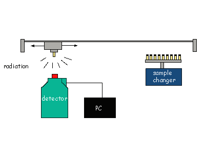

Neutron activation analysis (NAA)This is a popular trace element analysis technique used in archaeology to indicate where things were made (provenance studies) for ceramics, and rocks such as obsidian and marble. A sample is needed from the object to be analysed, usually taken by drilling in an inconspicuous place; about 50 milligrams (one-twentieth of a gram) are sufficient, so the damage to the object is very slight. When some of this sample is placed in a stream of neutrons, such as in a nuclear reactor, the atoms of the chemical elements of the material capture some of the passing neutrons and are transformed into radioactive versions (isotopes) of the same element, which emit radiation. After the sample has been removed from the reactor it continues to emit radiation as the radioactive isotopes decay, and if placed in front of suitable radiation detectors, the radioactivity of each element can be isolated and is a direct measure of the amount of that element in the material. Standard materials of known composition are irradiated at the same time for calibration purposes. This very sensitive analysis method gives the quantity of over 25 different elements in the object, down to parts per million. |